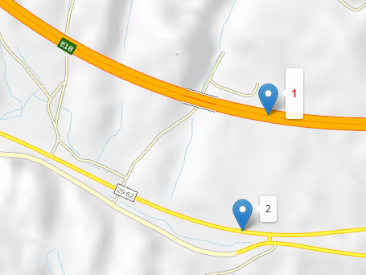
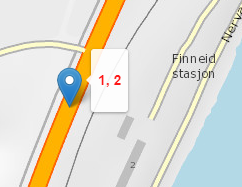
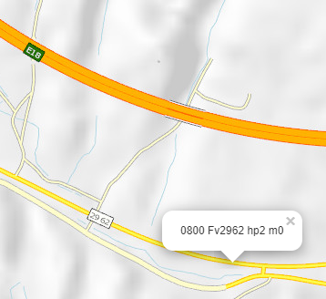
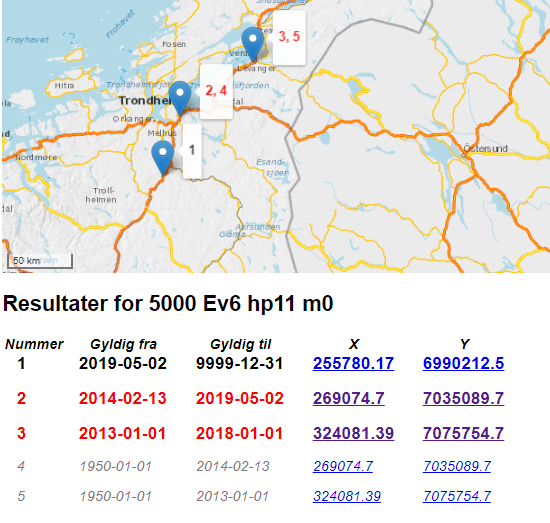

Vegreferansen for et punkt på vegnettet kan endres flere ganger i vegens levetid. Og en konkret vegreferanse - for eksempel 0800 Ev 18 hp1 m0 - kan finnes flere steder, til ulike tider.
Vi på NVDB- og Geodataseksjonen i Vegdirektoratet har laget dette kartverktøyet for å vise hvordan vegreferansene har endret seg i tid og rom. Kartet er fremdeles noe eksperimentelt.
Kartet henter data fra Visveginfo-tjenesten, som normalt oppdateres med ferske data fra NVDB hver natt. Noen ganger, for eksempel ved oppdatering av datakatalog, kan det ta lengre tid. Siste oppdatering av Visveginfo-tjenesten var: Henter straks data...
.Datovelgeren angir hvilken dato som skal fremheves spesielt, i kart og tabell. Dette kan gjøre det mer lettvint å lese verdier for en spesiell dag. Selve resultatene påvirkes ikke, kun presentasjonen.
fylke: Kommune: Vegkategori: Vegstatus: Vegnr: Hp: Meter:
Med disse valgene angir du den vegreferansen som er interessant for deg, og se hvordan den har flyttet seg i tid og rom. Bruk knappen "Hent denne vegreferansen for å oppfriske kart og tabell.
| Nummer | Gyldig fra | Gyldig til | X | Y |
|---|---|---|---|---|
| 1 | 2012-06-06 | 9999-12-31 | 205102.57 | 6560292.99 |
| 2 | 1950-01-01 | 2012-06-06 | 205060.17 | 6560102.44 |
I eksemplet over ser vi hvordan hp1 meter 0 på E18 i Telemark flyttet seg da E18 motorvegen Sky-Langangen åpnet i 2012. Den gamle E18-traséen, markert med tallet 2 i kart og tabell, er i dag blitt til Fv 2962.
Koordinatene er klikkbare! Når du klikker på en koordinat får du tidsutvikling av vegreferanse i dette punktet, slik som beskrevet i avsnittet Vis punktverdier.
Hvis du huker av valget "Vis også dagens vegreferanse" får du også vist dagens verdier i tabellen.
Vis også dagens vegreferanse
| Nummer | Gyldig fra | Gyldig til | X | Y | Dagens v.ref |
|---|---|---|---|---|---|
| 1 | 2012-06-06 | 9999-12-31 | 205102.57 | 6560292.99 | 0800 Ev18 hp1 m0 |
| 2 | 1950-01-01 | 2012-06-06 | 205060.17 | 6560102.44 | 0800 Fv2962 hp2 m0 |
Kartløsningen slår sammen punkt som ligger veldig nærme hverandre. P.t. er grensen for å slå sammen punkt satt lik 5 meter.
Her er eksempel på hvordan to punkter slås sammen til ett for 1800 Ev6 hp21 m350. Avstanden mellom punktene er ca 3.5 meter, for lite til at det blir lesbart om vi viser begge i kartflaten.

| Nummer | Gyldig fra | Gyldig til | X | Y |
|---|---|---|---|---|
| 1 | 2019-01-16 | 9999-12-31 | 518499.46 | 7459415.79 |
| 2 | 1950-01-01 | 2019-01-16 | 518501.16 | 7459418.83 |
Ved å klikke på en veg i kartet kan du se hvordan vegreferansen har endret seg i dette punktet.

| Vegreferanse | Gyldig fra | Gyldig til | Kommentar |
|---|---|---|---|
| 0800 Fv2962 hp2 m0 | 2019-05-08 | 9999-12-31 | Dagens verdi |
| 0800 Fv30 hp1 m0 | 2013-10-28 | 2019-05-08 | |
| 0800 Et18 hp1 m0 | 2012-06-06 | 2013-10-28 | Midlertidig vegstatus |
| 0800 Ev18 hp1 m0 | 1950-01-01 | 2012-06-06 | Gammel E18 trasé |
Av tabellen ser vi at dagens Fv2962 het Fv30 før 8. mai 2019.
Fram til 2012-06-06 het vegen Ev18, men det tok over ett år (fram til 2013-10-28) før vegen fikk fylkesveg-nummeret Fv30. I mellomtiden het vegen Et18, hvor bokstaven "t" betyr midlertidig status bilveg. Dette er vanlig praksis når det drøyer ut i tid med tildeling av nye vegnummer.
For den som er ute på vegen er det kanskje greit å se hvilke vegreferanseverdier som har vært i din posisjon? Knappen for dette ligger helt nederst på siden. Ellers er visningen lik den du får når du klikker i kartflaten.
Logikken bak vegreferansesystemet er beskrevet i detalj i Håndbok V830 Nasjonalt vegreferansesystem (.pdf). Ønsker du en lettvint oversikt over hva kodene betyr så er NVDB api-dokumentasjon veldig grei.
Vegreferansen er unik innafor hvert fylke - men denne logikken vil ikke overleve at de fleste fylkene slås sammen 1.1.2020. Vi har laget et nytt referansesystem for NVDB som fases inn høsten 2019. Du bør legge om til det nye systemet fortest mulig. Frem til august 2021 kan du bruke dagens system såfremt du bruker 2019-fylkesnummer og lever greit med en del forbehold om datakvalitet.
Her er et eksempel på hva slags problemer sammenslåing av fylker byr på. Nord- og Sør-Trøndelag slo seg sammen i 2018. Hvis du vil se tidsutvikling for en vegreferanse i det nye fylke 50 - for eksempel 5000 Ev6 hp11 m0 - mener du da den som fantes i Nord-Trøndelag (1700 Ev6 hp11 m0), eller den i Sør-Trøndelag (1600 Ev6 hp11 m0)? Begge disse er nå blitt til fylke 50.
For Trøndelag sin del klarte vi løse sammenslåingen ved å gi nye vegnummer eller hp-verdier der det var overlapp. Men det er ikke mulig å gjøre det samme for Troms og Finnmark, Vestland, Agder, Vestfold og Telemark, Innlandet og Viken.
